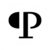

週次市場レポート2026年11月23日（月・祝）

今週の3行まとめ
- 昨日の週足は $61,271（前週比 −6.2%）で7週連続の陰線。先週の配信で講師が触れた「$60,000〜58,000 へのタッチ」は 11/20（金）に実現し、翌 11/21（土）には $55,130 まで下げました。ただし日足の終値で 7月安値 $57,800 を割った日はありません。
- 構図が先週と逆になりました。先週は「株高・ビットコインだけ安」、今週は株（S&P500 −8.6%）・金（−9.5%）・ビットコインの同時安です。引き金は AI 関連株で、米大手半導体企業は好決算でも週 −22.9% でした。
- 警報器は2週連続で色が入れ替わりました。米10年金利は 5.15% → 4.92% へ緩和した一方、落ち着いていた信用スプレッドが 3.52% へ再び拡大しています。
| 側 | 材料 | 位置づけ |
|---|---|---|
| 弱気 | 週足終値 $61,271（−6.2%）・7週連続陰線。200週線比 −10.1%・50週線比 −17.7% | 200週線は「割れた線」から「約10% 上の抵抗」に変わりました |
| 弱気 | 300週線（$57,780）と 7月安値（$57,800）を日中に下回り $55,130。前週安値 $62,006 からの安値切り下げ | 講師が待つ「底値圏の形（二番底など）」はまだ出ていません |
| 弱気 | 現物 ETF は週 −$1.25B（暫定）。最大手の ETF は 11/19 に設定来最大の流出 | 連続流出の記録は月曜に一度途切れましたが、翌日から4営業日連続で流出しています |
| 弱気 | 米国株が調整入り（S&P500 は10月高値から −11.6%）。信用スプレッドは 3.52% へ再拡大 | 先週は「信用ではなく金利」でしたが、今週は信用側も動き始めました |
| 強気 | 日足終値では $57,800 を一度も割らず、安値から週足終値まで +11.1% | 「日中は割れたが、終値は守った」 |
| 強気 | 先物の建玉が減少し、買い持ちに偏っていた比率も低下。資金調達率は過熱なし | レバレッジの掃除は進みました。ただし現物の買い手が戻ったかは未確認です |
| 強気 | 恐怖指数は 10〜12 が8日連続。短期保有者の損失確定売りは過去の安値圏並みの量 | 投げ売りの量は大きい。ただし「底」ではなく「反発しやすい状態」と区別する見方が多数です |
| 強気 | 米10年金利 4.92%・原油 $84。12月の利上げ幅は 0.25% にほぼ収束 | 金利と原油は緩和方向。ただし金利低下の理由は株安による安全資産への逃避で、インフレ鈍化ではありません |
| 両義的 | ETH/BTC はほぼ横ばい（0.0282）。ETH の週安値は $1,538 | 下落局面で ETH だけが大きく売られる形にはなりませんでした |
今週の一行: 「売りの出どころが『金利とドル』から『AI 関連株』へ移った。ビットコインは帯の下端を日中に割り、終値で戻した」。
答え合わせ — 「$60,000〜58,000 タッチ」は実現、その先は綱引き
先週の配信で講師は戦略方針を調整し、「$60,000〜58,000 にタッチしてもおかしくない」とお伝えしました。1週間で実際に何が起きたかを、日付順に確認します。
- 週足の結果
- 終値 $61,271（−6.2%）・週安値 $55,130。7週連続の陰線は、取引所の全履歴（2017年〜）で 2022年の9週連続に次ぐ長さです。7週の合計では $86,530 → $61,271（−29.2%）になりました。
- 移動平均線
- 200週線 $68,176 は終値の約10% 上、50週線 $74,453 は約18% 上です。300週線 $57,780 は日中に 4.6% 下回りましたが、週足終値は 6% 上で終えています。終値は 200週線と 300週線の間にあります。
- 講師が触れた水準
- BTC の「$60,000〜58,000」は 11/20（金）に到達（安値 $57,778）。翌日に帯を日中で下抜けたあと、$60,000 台へ戻しました。ETH は「BTC が下げ続ければ $1,500 付近」に対し、週安値 $1,538（あと約2.5%）まで接近し、週足終値は $1,724（−6.1%）です。
- 底値圏の形
- 講師が待つ「ダブルボトムなどの形」はまだ成立していません。安値は $62,006 → $55,130 と切り下がっています。次の定点は「$55,130 を再び試すのか、それより上で止まるのか」です。
先週調整したシナリオに対して — 枝ごとの材料整理
先週の配信で講師が示した配分は、「長期移動平均線の帯で反発 約50%／$48,000 付近まで下落 約40%／さらに一段下 約10%」でした。今週そろった材料を枝ごとに並べます。配分をどうするかは、本日の配信で講師からお伝えします。
| 枝（先週の配分） | 今週、その枝に沿う材料 | 逆らう材料・留保 |
|---|---|---|
| 帯で反発 約50% | 週足終値は帯の中／安値から終値まで +11.1%／日足終値では 7月安値を割っていない／レバレッジの掃除が進んだ／恐怖指数 10〜12 が8日連続／金利が低下 | 日中には帯の下端を 4.6% 下抜けた／戻りの主体が現物の買いか、売り持ちの買い戻しかは未確認／ETF の流出は継続 |
| $48,000 付近 約40% | 7週連続陰線／帯の下端を日中に割った／最大手 ETF から設定来最大の流出／株が調整入り／信用スプレッドの再拡大／12/9 の利上げ／11/30 の指数除外の発効 | $48,000 までは週安値から約13%、終値から約22% の距離がある／売られ過ぎを示す指標は極端な水準 |
| さらに一段下 約10% | 今週新たに積み上がった材料は乏しい | — |
週足で5週以上の陰線が続いた例は、過去に3回だけです（2018年11月の5週・2022年5月の9週・2026年2月の6週）。その後の方向は「2回は下落継続、1回は8週後に約 +20%」と割れており、傾向として語るには例が少なすぎます。
また、先週 11/16 号のレポートは配信前の作成だったため、シナリオの記載は調整前（60%／40%）のままでした。配信で示された最新の配分は、上の表のとおりです。
なぜ下げたのか — 売りの出どころが「金利」から「AI 関連株」へ
先週は「株が戻ってもビットコインは戻らなかった。売りは金利とドルから来た」と整理しました。今週は金利がむしろ下がっています。それでも下げた理由を、起きた順に確認します。
| 資産 | 11/13 | 11/20 | 週間 |
|---|---|---|---|
| S&P500 | 7,562 | 6,910 | −8.6% |
| ナスダック総合 | 25,136 | 22,618 | −10.0% |
| 金（先物） | $3,886 | $3,515 | −9.5% |
| BTC（週足） | $65,351 | $61,271 | −6.2% |
| 日経平均 | 61,142 | 56,437 | −7.7% |
| 米10年金利 | 5.15% | 4.92% | −0.23pt |
| ドル指数 | 103.41 | 103.81 | +0.4% |
| 原油 WTI | $88.6 | $84.0 | −5.2% |
※ BTC は週足（11/15 終値 → 11/22 終値）。ほかは 11/13 終値 → 11/20 終値です。
- 好決算でも売られた
- 11/17（火）の取引終了後、米大手半導体企業が決算を発表しました。売上・利益とも市場予想を上回りましたが、株価は週 −22.9%（11/20 の1日で −14.0%）。会計をめぐって米当局が調査している、との報道が金曜の急落につながったとされています。半導体株の指数は週 −17% でした。
- 過去最大級の上場
- 11/19（木）、大手 AI 開発企業が米国市場に上場しました（調達額は約 $81B）。初値は公開価格を約34% 上回りましたが、その後は伸び悩み、上場した週に市場全体が調整入りしています。
- 株・金・BTC の同時安
- 11/20（金）の S&P500 は −3.7%（7日続落）、株の変動の大きさを示す指数は 19 → 36 へ上昇しました。金も 1年2か月ぶりの安値圏まで売られ、「安全な逃げ場」として機能した資産は国債だけでした。
- 金利は下がった
- 米10年金利は 5.15% → 4.92%。12/9 の FOMC の利上げ幅は「0.25% か 0.5% か」が論点でしたが、株の急落を受けて 0.25% にほぼ収束しています。先週の主役だった「金利とドル」のうち、金利は和らぎました。
- BTC の需給
- 現物 ETF は 11/17〜20 の4営業日で流出が続き、11/20〜21 には買い持ちの強制決済が約 $1.8〜2.7B（集計により幅）発生しました。BTC 大量保有の米上場企業は、保有分が平均取得単価を約19% 下回り、株価は週 −30% です。同社の指数除外は 11/30（月）の取引終了時に発効します。
警報器ダッシュボード — 2週連続で色が入れ替わった
黒い縦線が先週の位置、色付きバーが今週の位置です。先週は「金利が再点灯・信用スプレッドが緩和」でした。今週は逆に、金利が緩和し、信用スプレッドが再び拡大しています。
外部リサーチの視点 — 8日後に BTC の続報。「12月にもう一度の試し」が基本線
定点観測中の外部リサーチ（サイト）が、先週の号から8日後の 11/19 にビットコイン単独の続報を公開しました。今回は有料記事のため、確認できたのは公開されている要旨の部分までです。データの基準日は 11/18 で、その後の急落は反映されていません。
| 論点 | 11/11 号 | 11/19 号（公開部分） |
|---|---|---|
| 短期の想定期間 | 12/9 の FOMC まで | 12/11 まで（FOMC と翌日の CPI を含む） |
| 短期の見立て | いちばん低いレンジ（$64,000〜70,000）を最有力としていた | レンジ全体を引き下げたうえで配分し直し。基本線は「いったん反発し、12月にもう一度 $60,000〜61,000 を試す」 |
| 200週線 | 一番底の帯（$66,000〜72,000） | 下値の支えではなく、戻りの目標（$68,200）という扱いに |
| 相場を動かすもの | 株の節目を維持できるかが分岐 | 「金利と暗号資産自身の資金の流れ」が主導で、株のチャートではない |
| 底かどうかの判断 | — | 「反発には十分だが、底と呼ぶにはまだ足りない」。7月安値が保たれるかは、価格そのものより再度試すときの形しだい |
公開後の4日間で、現実はどう動いたか
| 続報が示した内容 | その後の実際 | 状態 |
|---|---|---|
| $62,000 が支持帯の下端 | 11/19 に下抜け、11/23 の高値も $61,960 で未回復 | 下抜け後、戻りを試す段階 |
| 上場のあとにまず反発、その後に再度の試し | 上場当日 −1.7%・翌日 −4.9%。反発は 11/21 の安値以降 | 順序が逆（先に下落） |
| 基本線のレンジ $57,700〜69,000 | 週安値 $55,130 は下回り、週足終値 $61,271 は範囲内 | 日中は下抜け・終値は範囲内 |
| 「株が底堅くても BTC は連れ高しない」 | 11/19〜20 に株そのものが急落 | 前提が2日後に変化 |
読み方の注意: 続報に付いている確率は「12/11 までの BTC の値幅」についての数字で、講師のシナリオ配分（約50%／約40%／約10%）とは別のものです。並べて比較しないようご注意ください。また、基準日の直後に前提が動いているため、ひとつの見方として距離を置いて読むのが適切です。半減期までの長期の見取り図（二段階の底）については、今回の公開部分に言及がなく、変更の有無は確認できていません。
実務連絡と銘柄フォロー — bitbank の MEXC 制限は明日から
日付が迫っている実務連絡が1件あります。先にこちらをご確認ください。
MEXC 規制の続報
- bitbank の対応
- MEXC からの入金が確認された場合、残高への反映を一時保留して取引内容を審査することがあり、結果によっては入出金や口座の利用制限、利用契約の終了もあり得る、としています。MEXC に資産がある方は、12/10 より前に余裕を持ってお手続きください。
- 国内の他社
- MEXC との送金を全面的に止めた、または入金を審査対象にした取引所がすでに複数あります。一方で、個別の制限を公表していない取引所もあり、対応は会社ごとに分かれています。お使いの取引所のお知らせを各自でご確認ください。
- 備え方
- 先週の配信でお伝えしたとおり、「MEXC から取引所へ直接送らない」「いったんご自身のウォレットで受ける」が基本です。ただし bitbank は間接的な送金も対象になり得るとしているため、ウォレットを経由すれば必ず通る、とは言い切れません。米国の命令の発効日は 12/10（木）で変わりません。MEXC 自体の入出金・取引は通常どおり稼働しています。
iPhone・iPad をお使いの方へ（先週の配信の続報）
- 報道の内容
- 先週の配信で講師が触れた件は、セキュリティ専門メディアの 11/10 付の記事が出どころと確認できました。悪意のあるアプリを入れた場合に、ほかのアプリが端末内に保存したデータ（リカバリーフレーズや秘密鍵を含む）を読み取られる恐れがある、という内容です。大手取引所は「この件による損失は確認されていない」としています。
- 対処
- ① iOS を最新版に更新する ② 使っていないアプリ・出どころの不確かなアプリを削除する ③ 不安がある場合は、別の安全な端末で新しいウォレットを作り、資産を移す（パスワードを変えても、リカバリーフレーズは変わりません）。なお、最新の iOS でこの問題が完全に塞がれたかどうかは、現時点で確認できていません。
Keplr 流出事件の続報
- 照会サイト
- ソーシャルログインの提供元が、資産の保護状況を確認できる照会サイトを 11/19 に公開したと報じられています。正規の URL は当方で確認できていません。確認する場合は、必ず提供元の公式アカウントの投稿からたどってください。検索結果や DM のリンクからは開かないでください。
- 未発表のもの
- 返還の手続きと、原因の詳しい報告書はまだ発表されていません。
今週の急騰銘柄・持続性チェック（レポートの定点観測）
時価総額上位100位以内で 7日間 +20% を超えたのは4件でした。同じ期間に上位300銘柄のうち上昇したのは約5% で、4件とも市場全体とは逆の動きです。配信で講師が言及した銘柄ではなく、機械的な抽出による観察記録です。
| 銘柄 | 7日間 | 30日間 | 観察のポイント |
|---|---|---|---|
| PIEVERSE | +106% | +273% | 新機能の告知と、ロック解除を無難に通過したことが重なりました。ただし値幅の大半は薄い流動性と保有の集中によるもので、11/22 には1日で約45% の往復がありました。一過性寄り |
| BTW | +54% | −60% | 5日で約63% 急落したあとの戻りで、起点が底値付近だから大きく見える数字です。上昇を説明する公式の材料は見つかっていません。12/2（水）に次のロック解除があります。持続性は低い |
 PEARL | +29% | +5% | 採掘方式の更新予定と、米国の大手取引所での取り扱い開始が材料。ただし30日ではほぼ元の水準で、下落分の戻しという面もあります。要観察 |
| VVV | +29% | +5% | 著名投資家の言及・新サービスの開始・取引所での取り扱いが同じ週に重なりました。「注目材料が重なった週」で、今週の上昇分は一過性寄りです |
4件のうち3件は AI 関連です。AI「株」が急落した週に AI 関連「トークン」の一部が上昇しましたが、連動しているわけではなく、それぞれの固有の材料と薄い需給によるものです。
先週取り上げた銘柄のその後
| 銘柄 | 今週の実測 | 観察のポイント |
|---|---|---|
| RAIN | 11/17 の $0.0061 を頂点に $0.0033 へ全戻し | 先週「一過性の可能性が高い」とお伝えしたとおりの結果になりました。急騰を説明する公式発表は、その後も見つかっていません |
| BTW | $0.43 → 11/17 に $0.37 で下げ止まり → $0.70 | 先週の追跡対象だった「二段目の下げ」は 11/17 で止まりました。上の表のとおり、戻りの理由は未確認です |
講師注目銘柄フォロー（先週の配信で言及された銘柄）
| 銘柄 | 先週 | 今週 | 状況 |
|---|---|---|---|
| BTC | $65,351 | $61,271（週 −6.2%） | 講師が触れた $60,000〜58,000 に 11/20 到達。日中に $55,130 まで下げ、週足終値は 300週線の上。底値圏の形はまだ出ていません |
 ETH ETH | $1,835 | $1,724（週 −6.1%） | 講師が触れた $1,500 付近に対し、週安値 $1,538 まで接近。ETH/BTC は 0.0282 でほぼ横ばい |
※ 個別銘柄の記載は市場観察の記録であり、売買をすすめるものではありません。
来週に向けて — $55,130 を再び試すか、上で止まるか
答えが出るイベント（日付順・米国時間）
- 11/24（火）bitbank の MEXC 宛て出金制限が開始（日本時間）。
- 11/25（水）10月の個人消費支出物価指数（PCE） — FRB が重視する物価指標です。同日に GDP 改定値と新規失業保険申請も発表されます。
- 11/26（木）感謝祭で米国市場は休場、11/27（金）は短縮取引 — 週の後半は商いが薄くなり、値が飛びやすくなります。
- 11/29（日）週足終値 — 8週連続の陰線になるか。300週線（$57,780）を週足終値で保つか、200週線（$68,176）との距離を縮めるか。
- 11/30（月）指数除外の発効 → 12/4（金）雇用統計 → 12/8〜9 FOMC → 12/10（木）CPI・MEXC 命令の発効・bitbank の入金制限 → 12/11（金）つなぎ予算の期限 → 12/17〜18 日銀。
価格の定点観測
- 最優先: 11/21 の安値 $55,130 — 再び試すのか、それより上で止まるのか。上で止まれば「形」の最初の材料になります
- 日足の終値で 7月安値 $57,800 を割る日が出るか（今週は日中のみ）
- $62,000 を日足の終値で取り戻せるか
- ETH は $1,500 付近（週安値 $1,538）
警報器の定点観測
- 最優先: 信用スプレッド 3.52% — 金曜の株安を反映して 3.5% 台に定着するか
- 米10年金利 4.92% — 5.0% を再び超えるか、4.8% を割るか
- 原油 — $80 方向へ進むか